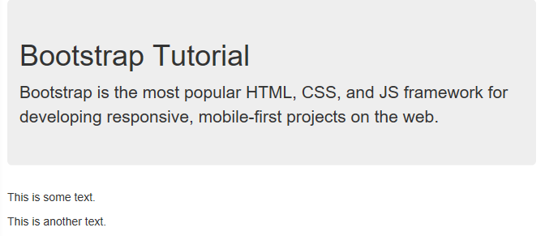

특별한 내용이나 정보에 특별히 관심을 보이도록 하기 위한 목적의 큰 상자(박스) 입니다.
설명글 내용을 적습니다.
.page-header : 영역 하단에 회색선을 표시함.
jumbotron, page-header 서식은 버전 5 이하에서 사용.
.wells
테두리 테두리 테두리 테두리 테두리모서리 둥글게
img태그에 class=rounded, rounded-top, rounded-end, rounded-bottom, rounded-start, rounded-circle, roundec-pill 을 활용하여 둥근 이미지를 표현할 수 있다
모서리 round값 설정하기
round-1, round-2, .. 를 적용하여 모서리의 round 값을 설정할 수 있다.